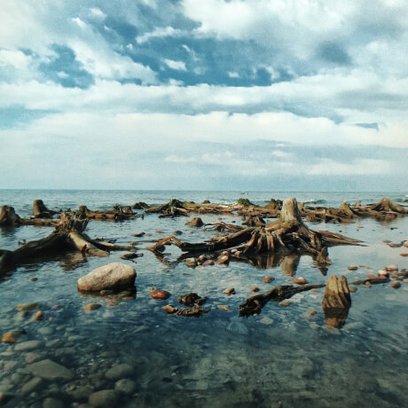

Путешествия
по России
Настоящая страна не в выпусках
новостей, а здесь.

ваша полка — верхняя
Чего мы там не видели?
По опросам ВЦИОМ, 95% россиян мечтают куда-нибудь поехать,
но только 36% планируют провести отпуск в родной стране. Мол, чего мы тут, дома,
не видели? На самом деле, Россия — это целая вселенная с ласковым
морем юга, густыми лесами Саян и суровыми льдами плато Путорана. А ещё увидеть все эти
красоты можно без миллионов на счету, загранпаспорта и многочасовых перелетов. Как,
например, Вера Башмакова — смелая молодая мама, которая взяла в охапку троих детей,
усадила их в свою «Ладу»
и проехала 20 тысяч километров
по родной стране. Мы выбрали
и описали некоторые интересные места, достойные вашего отпуска.
- Часовых поясов 11
- Объектов природного наследия ЮНЕСКО 12
- Объектов культурного наследия ЮНЕСКО 16
- Природных заповедников105
- Аэропортов 241
Куршская коса

Здесь, посреди лесов и песчаных дюн, вы сможете
увидеть два водных горизонта спокойного Куршского залива с одной
стороны и подёрнутого рябью волн Балтийского моря с другой. Уникальная
природная зона на краю российского анклава.
На этом Калининградская область не заканчивается. Для
путешественника и исследователя там же по соседству — самая
западная точка России, Балтийская коса, — и немецкое наследие россыпи
небольших приморских городов. Атмосфера здешних мест исключает суету, окуная
в спокойствие природы и запах стального, прохладного моря.
Кольский

Почти весь полуостров находится за Полярным кругом. Саамская
тундра, от которой на юг — тайга, а на север — Ледовитый океан, прикидывающийся Баренцевым
морем.
Возможно, вы смотрели Звягинцева и даже слышали историю
арктического фестиваля в Териберке. Возможно, слово «Хибины» не осталось под снегом школьных
воспоминаний об уроках географии. Возможно, вы не интересовались пронизывающей земную кору
сверхглубокой скважиной, а от апатитов вас давно накрывает апатия. Но ваша мечта увидеть
северное сияние начинает сбываться с билетом в Мурманск.
Алтай
Алтай — одно из красивейших мест в России. В первую очередь
из-за гор: если ехать вдоль хребта, вы увидите склоны, усыпанные соснами, горные реки и
озёра. А если вы откроете в автомобиле окна, сможете познакомиться с невидимым чудом здешних
мест — горным воздухом.
Климат на Алтае умеренный, поэтому ехать сюда лучше всего
летом. Так вы увидите всё разнообразие местной флоры и фауны. По лесам Алтая бродят лоси,
над хребтами летают орлы, а на равнинах пасутся косули. И знаменитые манулы — тоже обитатели
Алтайского края.
Зимний Байкал
Всем известен Байкал как крупнейшее озеро в мире. Многие
также знают, что это самый большой источник пресной воды и одно из красивейших
мест в России.
Конечно, это всё так. Но Байкал ещё идеальное место для
соревнований по скийорингу. Это такой вид спорта, когда лыжник привязывает себя
к мотоциклу, и тандем старается развить как можно бóльшую скорость на льду. В марте 2019
года на фестивале «Байкальская миля» был поставлен мировой рекорд — 197.011 км/ч.
Карелия

Сибирь заканчивается не на Урале, а в Карелии: образующая тайгу
сибирская лиственница не растёт западнее Водлозера. Зато здесь она вымахивает на 30 метров —
леса карельских национальных парков из-за непроходимых болот никогда не знали топора.
Некоторым соснам уже больше чем полтысячелетия. Прикоснитесь к живому существу, видевшему
солнце раньше, чем увидал его Иван Грозный. В девственном лесу на сотню километров не
встретишь тропы. А на редких тропинках деревья в паре метров от земли помечены медвежьими
когтями. Чтобы все знали, кто тут хозяин.